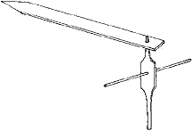

Articles Tools
and Tool Making for Porcelain The tombo measure is cut from bamboo which is light and strong. The crosspiece always has the skin of the bamboo facing down. This is usually the straightest edge and can be made finely. Next the kote is made. I usually cut out a template from light card before transferring the drawing to the timber. Once the shape is cut out, the throwing rib is refined with a sharp carving knife. (I use a Japanese knife that has hardened sandwiched steel made in the same tradition as the samurai swords.) The leading edge must be carved in a shape similar to your finger. Lastly, the hera is made by placing the kote on the thin timber plank of cherry or pear and reproducing the shape a little more fully than the kote. The hera is always slightly larger and is the final shaping tool. It is important that this tool is just the shape you desire, remembering there will be 17 percent shrinkage and some slumping in the glaze firing. This tool needs to be finished to a fine knifelike edge and then polished like glass.  tonbo tool It is important to test the tools to see if they will perform as you want them to do. In the case of a teapot design, until the main body of the teapot is made and is satisfactory, one cannot accurately make the model for the spout and handle. (I usually slipcast handles and spouts so the carved models must be made to fit the dry turned body of the teapot before making the molds.) All my throwing is off the hump and this technique is preferable to make the best use of these tools. You can still use them throwing one piece at a time on the wheel head but you would need to use bats to avoid distortion when removing the pots from the wheel. After centering and opening up the clay, the kote is introduced. Holding it steadily with the left hand, the clay is drawn up over the tool with the right hand. (I find it important to keep my body over the wheel head to give me more control.) The hera is the finishing tool which gives the finished shape and surface to the inside of the piece. Here it is important to understand that you are making to the inside shape. The outside shape is turned later to match the inside surface when the piece is nearly dry. If you are happy with the performance of the tools then, using your tonbo measure, you can begin to reproduce that shape. If not, then it is a case of modifying the shape of the tools slightly and trying again. Tochin are pads that are made from the same porcelain clay to be used as setting pads in the glaze firing to prevent or minimize warping. There are two basic types: those for firing items the right way up and those for firing work on their rims (upside down or fuseyaki). These pads need to be carefully thrown off the hump on the wheel, cut off with the bamboo knife and turned when dry. They do not need to be biscuit fired because there is no shrinkage from dry to biscuit with porcelain. The sizes vary according to the item being made and their shape is also important because they must support the item without collapsing. In this, curved forms are much stronger than straight surfaces. Before placing any wares into the glaze kiln, the foot rims are carefully wiped (I never use wax) and the tochin are adhered with a mixture of PVA glue and calcined alumina. The alumina is to ensure ease of detachment after firing and the PVA is to attach them to assist in ease of kiln placement. Other precautions taken in glaze firing include beating a thin pad of porcelain (hama) which is placed between the tochin and the kiln shelf after being dusted with calcined alumina. In the case of firing fine cups with handles, a pad that has been beaten on an angle is placed under the tochin so that the weight of the handle is offset over the cup. This helps to prevent any warping of the cup. Porcelain is turned in an almost dry state. The best turning tools are those made from tungsten carbide steel because they retain their edge although they need a diamond stone to sharpen them. I use a variety of strap steel and tungsten turning tools. A chuck is made from porcelain on the wheel prior to turning and of a size that the item being turned will fit over comfortably. The chuck is allowed to dry completely and can be used almost indefinitely (when its life is finished it can be recycled). To adhere it to the wheel head, dip its base into a bucket of water and then tap it into center on the moving wheel head. Because I throw off the hump, I have made a gauge to measure the area to be turned from the inverted rim where the foot ring should be. This gauge comprises a wooden base with a sheet of glass on it. Next Page> More About Turning
|
|
| © Ceramics Today |